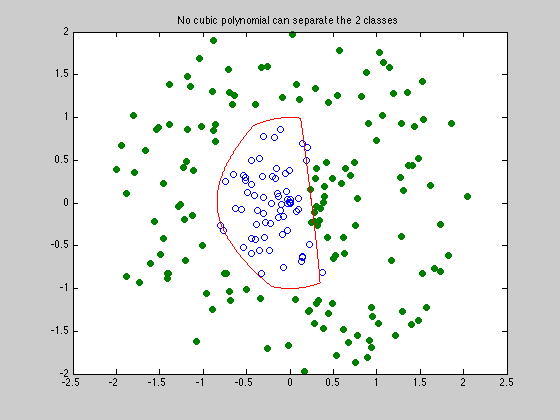

Polynomial discrimination
rand('state',0); randn('state',0);
N=100;
M=120;
X1 = -1+2*rand(2,N); X1 = X1*diag(0.9*rand(1,N)./sqrt(sum(X1.^2)));
ind = find(sqrt(sum((X1-[1.1*ones(1,N);zeros(1,N)]).^2)) < 0.9);
Y1 = X1(:,ind);
ind = find(sqrt(sum((X1-[1.1*ones(1,N);zeros(1,N)]).^2)) > 1);
X = X1(:,ind);
Y = -1+2*rand(2,M); Y = Y*diag((1.1+rand(1,M))./sqrt(sum(Y.^2)));
Y = [Y Y1];
N = size(X,2);
M = size(Y,2);
monX = [ones(1,N); X(1,:); X(2,:); X(1,:).^2; X(1,:).*X(2,:); ...
X(2,:).^2; X(1,:).^3; X(2,:).^2.*X(2,:); ...
X(1,:).*X(2,:).^2; X(2,:).^3];
monY = [ones(1,M); Y(1,:); Y(2,:); Y(1,:).^2; Y(1,:).*Y(2,:); ...
Y(2,:).^2; Y(1,:).^3; Y(2,:).^2.*Y(2,:); ...
Y(1,:).*Y(2,:).^2; Y(2,:).^3];
[m1,m2] = size(monX);
fprintf(1,'Finding the optimal cubic polynomial that separates the 2 classes...');
cvx_begin
variables a(m1) t(1)
minimize ( t )
a'*monX >= -t;
a'*monY <= t;
cvx_end
fprintf(1,'Done! \n');
nopts = 1000;
angles = linspace(0,2*pi,nopts);
cont = zeros(2,nopts);
for i=1:nopts
v = [cos(angles(i)); sin(angles(i))];
l = 0; u = 1;
while (u-l > 1e-3)
s = (u+l)/2;
x = s*v;
if (a'*[1; x(1); x(2); x(1)^2; x(1)*x(2); x(2)^2; x(1)^3; ...
x(1)^2*x(2); x(1)*x(2)^2; x(2)^3] > 0), u = s;
else, l=s;
end;
end;
cont(:,i) = s*v;
end;
graph=plot(X(1,:),X(2,:),'o', Y(1,:), Y(2,:),'o', cont(1,:), cont(2,:), '-');
set(graph(2),'MarkerFaceColor',[0 0.5 0]);
title('No cubic polynomial was able to separate the 2 classes')
disp('-----------------------------------------------------------------');
disp('As seen on the figure, the 2 sets of points are not separated. ');
disp('Hence there exists no cubic polynomial that separates these 2 sets');
Finding the optimal cubic polynomial that separates the 2 classes...
Calling SeDuMi: 222 variables (11 free), 211 equality constraints
------------------------------------------------------------------------
SeDuMi 1.1 by AdvOL, 2005 and Jos F. Sturm, 1998, 2001-2003.
Alg = 2: xz-corrector, Adaptive Step-Differentiation, theta = 0.250, beta = 0.500
Split 11 free variables
eqs m = 211, order n = 234, dim = 234, blocks = 1
nnz(A) = 211 + 4642, nnz(ADA) = 211, nnz(L) = 211
Handling 22 + 0 dense columns.
it : b*y gap delta rate t/tP* t/tD* feas cg cg prec
0 : 1.05E-001 0.000
1 : 0.00E+000 4.13E-002 0.000 0.3946 0.9000 0.9000 1.99 1 1 1.7E+000
2 : 0.00E+000 3.03E-002 0.000 0.7326 0.9000 0.9000 9.53 1 1 2.6E-001
3 : 0.00E+000 1.34E-002 0.000 0.4425 0.9000 0.9000 9.29 1 1 4.7E-002
4 : 0.00E+000 5.68E-003 0.000 0.4242 0.9000 0.9000 0.97 1 1 3.9E-002
5 : 0.00E+000 2.65E-003 0.000 0.4660 0.9000 0.9000 1.43 1 1 2.6E-002
6 : 0.00E+000 1.33E-003 0.000 0.5041 0.9000 0.9000 1.81 1 1 8.2E-003
7 : 0.00E+000 7.41E-004 0.000 0.5547 0.9000 0.9000 1.99 1 1 2.5E-003
8 : 0.00E+000 2.41E-004 0.000 0.3250 0.9000 0.9000 1.92 1 1 4.1E-004
9 : 0.00E+000 5.29E-006 0.000 0.0220 0.9900 0.9900 1.32 1 1 6.8E-006
10 : 0.00E+000 4.95E-011 0.378 0.0000 1.0000 1.0000 1.01 1 1
iter seconds digits c*x b*y
10 0.4 Inf -2.9736011970e-015 0.0000000000e+000
|Ax-b| = 1.8e-012, [Ay-c]_+ = 4.7E-016, |x|= 3.3e-002, |y|= 4.8e-001
Detailed timing (sec)
Pre IPM Post
3.004E-002 3.805E-001 0.000E+000
Max-norms: ||b||=0, ||c|| = 1,
Cholesky |add|=0, |skip| = 0, ||L.L|| = 1.
------------------------------------------------------------------------
Status: Solved
Optimal value (cvx_optval): -2.97332e-015
Done!
-----------------------------------------------------------------
As seen on the figure, the 2 sets of points are not separated.
Hence there exists no cubic polynomial that separates these 2 sets
